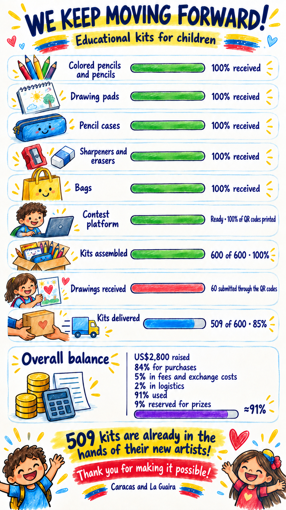
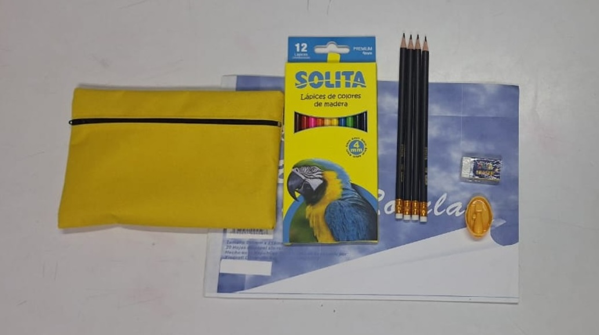
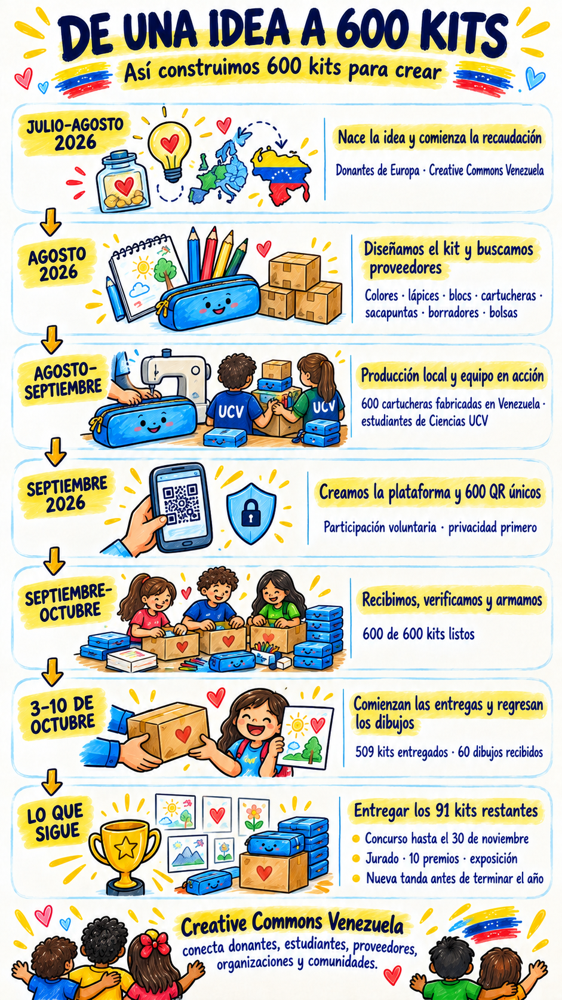
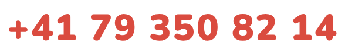

Idea and fundraising
Donors in Europe and Creative Commons Venezuela set a concrete target of 600 kits.
Donations received in Europe, local production in Venezuela, and the extraordinary work of students from the Faculty of Sciences at UCV.

Every component and unique QR invitation has been received, checked and assembled in Caracas.
The remaining 91 kits are being coordinated with local organisations for delivery during the coming week.

Each kit includes one unique QR invitation. Children may share a drawing voluntarily with the help of an adult. The portal will remain open permanently.
Open the unique QR included in the kit.
Take a photo or choose one already taken.
No surname, school, address or document is requested.
A diverse jury will select ten drawings for equal prizes.
A local chain of research, production, verification, volunteer work, technology and community partnerships.
Donors in Europe and Creative Commons Venezuela set a concrete target of 600 kits.
We compare dimensions, prices and availability and reject unsuitable materials.
Six hundred pencil cases are made in Venezuela while students receive and verify supplies.
A privacy-conscious system connects each kit with one optional drawing.
All materials arrive and the team completes 600 of 600 kits.
509 kits reach children and 60 drawings return through the QR invitations.

The remaining 9% is reserved for ten equal prize kits and the close of the drawing invitation. Volunteer hours contributed by the UCV student team are not included.
The first batch proves that the model can work. Now we want to complete the creative cycle and prepare a new batch before the end of the year.
Engage families, form a diverse jury and select ten drawings across ages and experiences.
With explicit permission, create a digital and travelling exhibition without exposing children’s identities.
Reconnect donors, students, local producers, organisations and communities, improving every cycle.
The first 600 kits are funded and assembled. New contributions will support the prizes, documentation and the next production cycle.
Questions or larger contributions: Arturo Sánchez Pineda
Follow the project: Creative Commons Venezuela
